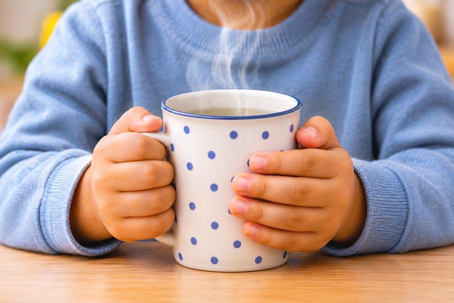
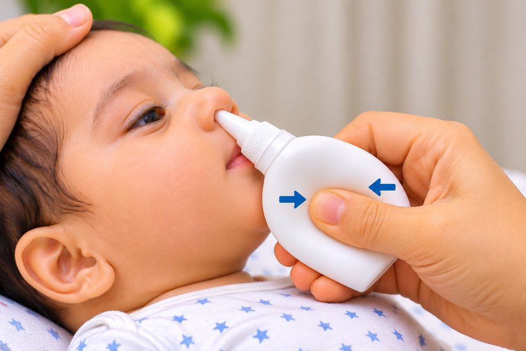
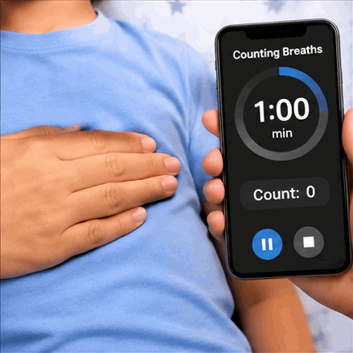

Cough and wheezing in children: viral or asthma, and when to see a doctorबच्चों में खाँसी और घरघराहट: वायरल या अस्थमा, और डॉक्टर को कब दिखाएँ
Most coughs in children come from viral infections and get better on their own. A few need a doctor's review, and wheezing, the whistling sound while breathing out, always needs proper evaluation. This guide explains the difference in simple words.बच्चों की ज़्यादातर खाँसी वायरल संक्रमण से होती है और अपने आप ठीक हो जाती है। कुछ खाँसी को डॉक्टर की जाँच चाहिए, और घरघराहट, यानी साँस छोड़ते समय सीटी जैसी आवाज़, की सही जाँच हमेशा ज़रूरी है। यह लेख सरल भाषा में फ़र्क समझाता है।
1Why children cough so oftenबच्चों को इतनी खाँसी क्यों होती है
A cough helps clear the airways. Young children catch several viral colds every year, and each cold can leave a cough behind for a few weeks. Some children have a post-viral cough that lingers after the runny nose has gone. A child who is playful, eating and drinking, and sleeping reasonably well is usually recovering normally.खाँसी साँस की नलियों को साफ़ करने का शरीर का तरीका है। छोटे बच्चों को हर साल कई वायरल सर्दी-जुकाम होते हैं, और हर सर्दी के बाद कुछ हफ़्तों तक खाँसी रह सकती है। कुछ बच्चों को पोस्ट-वायरल खाँसी होती है, जो नाक बहना बंद होने के बाद भी बनी रहती है। जो बच्चा खेलता है, खाता-पीता है और ठीक से सोता है, वह आम तौर पर सामान्य तरीके से ठीक हो रहा होता है।
2Types of cough and what they may meanखाँसी के प्रकार और उनका मतलब
- Dry or wet cough after a cold: a few days to about 3 weeks, with the child otherwise active. Usually viral, and supportive care is enough.सर्दी के बाद सूखी या बलगम वाली खाँसी: कुछ दिन से लगभग 3 हफ़्ते तक, बच्चा बाकी समय सक्रिय रहे। आम तौर पर वायरल, और घरेलू देखभाल काफ़ी होती है।
- Night-time cough: mainly at night or early morning, and it wakes the child. Can be post-viral, allergic or asthma, so review it if it keeps coming back.रात की खाँसी: ज़्यादातर रात या सुबह जल्दी, जो बच्चे को जगा दे। यह पोस्ट-वायरल, एलर्जी या अस्थमा से हो सकती है, इसलिए बार-बार हो तो जाँच कराएँ।
- Barking cough with harsh breathing in: a seal-like cough with a hoarse voice, often at night, in children under about 6 years. This is usually croup, a viral swelling of the upper airway, and needs a same-day review.भौंकने जैसी खाँसी और सख़्त साँस: सील जैसी खाँसी, भारी आवाज़, अक्सर रात में, आम तौर पर लगभग 6 साल से छोटे बच्चों में। यह अक्सर क्रुप होता है, यानी ऊपरी साँस की नली में वायरल सूजन, और उसी दिन जाँच ज़रूरी है।
- Cough in long bouts with a whoop, or vomiting after coughing: the face may turn red and the child looks exhausted. This can be whooping cough, which needs an urgent doctor visit and a check of vaccines.लंबी झड़ी वाली खाँसी जिसके बाद 'हूप' जैसी आवाज़ या उल्टी: चेहरा लाल हो सकता है और बच्चा थका हुआ दिखता है। यह काली खाँसी (whooping cough) हो सकती है, जिसके लिए तुरंत डॉक्टर और टीकों की जाँच ज़रूरी है।
- Sudden cough and choking after eating or playing: may follow gagging, or a small toy or food nearby. This can mean an object is in the airway. See the emergency signs below.खाने या खेलने के बाद अचानक खाँसी और दम घुटना: गैगिंग के बाद, या पास में कोई छोटा खिलौना या खाना हो। इसका मतलब साँस की नली में कोई चीज़ हो सकती है। नीचे दिए आपातकालीन संकेत देखें।
3What is wheezing?घरघराहट क्या है?
Wheezing is a whistling or squeaky sound, mostly while breathing out. It happens when the small airways become narrow, swollen or full of mucus. Wheezing is not a disease by itself. It is a sign that needs to be explained. The most common causes in children are:घरघराहट एक सीटी जैसी या चीं-चीं जैसी आवाज़ है, जो ज़्यादातर साँस छोड़ते समय आती है। यह तब होता है जब छोटी साँस की नलियाँ सँकरी, सूजी हुई या बलगम से भरी हों। घरघराहट अपने आप में कोई बीमारी नहीं है। यह एक संकेत है जिसकी वजह समझना ज़रूरी है। बच्चों में सबसे आम वजहें ये हैं:
- Viral wheeze: common in babies and toddlers during a chest infection, called bronchiolitis. It usually improves in a week or two.वायरल घरघराहट: शिशुओं और छोटे बच्चों में छाती के संक्रमण (ब्रोन्कियोलाइटिस) के दौरान आम। यह आम तौर पर एक-दो हफ़्ते में सुधरती है।
- Asthma: airways are inflamed and react to triggers. It often starts after repeated wheezing episodes.अस्थमा: साँस की नलियों में सूजन होती है और वे ट्रिगर पर प्रतिक्रिया करती हैं। अक्सर बार-बार घरघराहट के बाद शुरू होता है।
- Foreign body: an object in the airway, especially if the wheeze starts suddenly.बाहरी वस्तु: साँस की नली में कोई चीज़, खासकर अगर घरघराहट अचानक शुरू हो।
4Delhi triggers that make cough worseदिल्ली के ट्रिगर जो खाँसी बढ़ाते हैं
In Delhi, air quality and seasonal changes often trigger coughs and wheezing in children who are prone to them.दिल्ली में हवा की गुणवत्ता और मौसम के बदलाव अक्सर उन बच्चों में खाँसी और घरघराहट बढ़ा देते हैं जिन्हें यह होने की आदत हो।
- Winter smog and dust: fine particles and smoke irritate the airways. On high-pollution days, keep windows closed and keep outdoor play short. Our guide on air purifiers and Delhi pollution has more detail.सर्दी का स्मॉग और धूल: बारीक कण और धुआँ साँस की नलियों में जलन करते हैं। भारी प्रदूषण वाले दिनों में खिड़कियाँ बंद रखें और बाहर खेलने का समय छोटा रखें। दिल्ली प्रदूषण पर हमारे एयर प्यूरीफ़ायर वाले लेख में और जानकारी है।
- Dust and construction dust, in summer and spring.गर्मी और वसंत में धूल और निर्माण की धूल।
- Damp and mould after the monsoon, in bathrooms and cupboards.मानसून के बाद सीलन और फफूंद, बाथरूम और अलमारियों में।
- Smoke from mosquito coils, incense, cooking fuel and cigarettes, including smoke from people who smoke outside the house.मच्छर कॉइल, अगरबत्ती, खाना बनाने के ईंधन और सिगरेट का धुआँ, घर के बाहर पीने वालों का धुआँ भी।
- Viral infections in the dengue and flu season can make a cough flare up. A child with fever and cough needs a clinical check.डेंगू और फ़्लू के मौसम के वायरल संक्रमण से खाँसी बढ़ सकती है। बुखार और खाँसी वाले बच्चे की क्लिनिकल जाँच ज़रूरी है।
5Safe care at homeघर पर सुरक्षित देखभाल
- Fluids: offer small, frequent sips of water, breast milk, ORS or soup. Warm fluids can soothe the throat.तरल: पानी, माँ का दूध, ORS या सूप थोड़ा-थोड़ा, बार-बार दें। गुनगुने तरल से गला आराम पाता है।

- Rest and comfort: let the child rest, and keep the room calm and not too dry.आराम: बच्चे को आराम करने दें, और कमरे को शांत और बहुत सूखा न रखें।

- Saline drops and gentle suction for babies who cannot blow their nose. A blocked nose can make a cough worse.शिशुओं के लिए सलाइन ड्रॉप और हल्का सक्शन, जो नाक नहीं सुड़क सकते। बंद नाक से खाँसी बढ़ सकती है।
- Feeding babies: feed in a slightly upright position. Babies should always sleep flat on their back, so do not prop them up with pillows to sleep.शिशु को दूध पिलाते समय थोड़ा सीधा बिठाएँ। शिशु हमेशा पीठ के बल सुलाएँ, और सोने के लिए तकियों से उसे टेढ़ा न करें।
- Honey: only after 1 year of age, and in a small amount. Never give honey to a baby under 1 year, because of the risk of infant botulism.शहद: सिर्फ़ 1 साल की उम्र के बाद, थोड़ी मात्रा में। 1 साल से छोटे शिशु को शहद कभी न दें, क्योंकि इससे शिशु बॉटुलिज़्म का खतरा होता है।
- Warm steam: do not use hot-water steam inhalation, because children can be scalded by hot water or steam. Ask your doctor before trying any other home method.भाप: गर्म पानी की भाप न दें, क्योंकि बच्चे गर्म पानी या भाप से जल सकते हैं। कोई दूसरा घरेलू तरीका अपनाने से पहले डॉक्टर से पूछें।
6Cough and cold medicines: please readखाँसी-जुकाम की दवाएँ: कृपया ध्यान दें
- Do not give over-the-counter cough or cold medicines to children under 2 years unless a doctor has specifically advised them. They have not been shown to help, and they can cause serious side effects.2 साल से छोटे बच्चों को काउंटर पर मिलने वाली खाँसी-जुकाम की दवाएँ न दें, जब तक डॉक्टर खास तौर पर सलाह न दें। ये मदद करती नहीं दिखाई गईं, और इनके गंभीर दुष्प्रभाव हो सकते हैं।
- For older children, do not start cough syrups on your own. Ask your doctor first.बड़े बच्चों को भी अपने आप खाँसी का सिरप शुरू न करें। पहले डॉक्टर से पूछें।
- Antibiotics do not treat viral cough, so do not expect or demand antibiotics for a simple cold.एंटीबायोटिक वायरल खाँसी का इलाज नहीं करतीं, इसलिए साधारण सर्दी के लिए इन्हें न माँगें।
- Inhalers for wheeze must be prescribed and taught by a doctor. Do not stop a prescribed daily inhaler just because the child seems well.घरघराहट के लिए इनहेलर डॉक्टर ही लिखें और तरीका सिखाएँ। डॉक्टर का बताया रोज़ का इनहेलर सिर्फ़ इसलिए न रोकें कि बच्चा ठीक लगता है।
7When cough and wheeze may be asthmaकब खाँसी और घरघराहट अस्थमा हो सकती है
Asthma is a long-term condition of the airways. It is common in children and can be controlled well with the right treatment and inhaler technique. Think about asthma if your child:अस्थमा साँस की नलियों की एक लंबे समय की स्थिति है। यह बच्चों में आम है और सही इलाज और इनहेलर के सही तरीके से अच्छी तरह नियंत्रित हो सकता है। अगर आपका बच्चा ऐसा करता है, तो अस्थमा के बारे में सोचें:
- Has repeated episodes of wheeze, or a cough that returns with cold weather, exercise, laughing or crying.बार-बार घरघराहट होती है, या ठंड, दौड़ने-खेलने, हँसने या रोने पर खाँसी लौट आती है।
- Has a night-time cough that wakes the child, especially more than once a month.रात की खाँसी होती है जो बच्चे को जगा देती है, खासकर महीने में एक बार से ज़्यादा।
- Has a family history of asthma, eczema or allergies, or runs a nose with sneezing that comes back.परिवार में अस्थमा, एक्ज़ीमा या एलर्जी का इतिहास है, या छींक के साथ बार-बार नाक बहती है।
- Gets breathless or tired while playing, or avoids running with friends.खेलते समय साँस फूलती है या थकान होती है, या दोस्तों के साथ दौड़ने से बचता है।
Asthma is diagnosed by a doctor after the history and examination, and sometimes breathing tests when the child is old enough. Good treatment often means a daily controller medicine taken regularly, with a rescue inhaler used when needed. Using a spacer correctly makes a big difference. Ask the doctor or nurse to show you how.अस्थमा की पहचान डॉक्टर इतिहास और जाँच के बाद करते हैं, और बड़े बच्चों में कभी-कभी साँस की जाँच भी होती है। अच्छे इलाज में अक्सर रोज़ की नियंत्रक दवा नियमित रूप से ली जाती है, और ज़रूरत पड़ने पर राहत वाला इनहेलर। स्पेसर का सही इस्तेमाल बड़ा फ़र्क डालता है। डॉक्टर या नर्स से कहें कि आपको सही तरीका दिखाएँ।
8Breathing and emergency signsसाँस और आपातकालीन संकेत
Breathing speed is one of the most important signs. The World Health Organization uses these thresholds for fast breathing. Count the breaths for one full minute while the child is calm, not crying or feverish:साँस की रफ़्तार सबसे ज़रूरी संकेतों में से एक है। विश्व स्वास्थ्य संगठन (WHO) तेज़ साँस के लिए ये सीमाएँ इस्तेमाल करता है। बच्चा शांत हो, रो या बुखार में न हो, तब पूरे एक मिनट तक साँसें गिनें:
- Under 2 months: 60 or more breaths per minute.2 महीने से छोटे: प्रति मिनट 60 या ज़्यादा साँसें।
- 2 to 11 months: 50 or more breaths per minute.2 से 11 महीने: प्रति मिनट 50 या ज़्यादा साँसें।
- 1 to 5 years: 40 or more breaths per minute.1 से 5 साल: प्रति मिनट 40 या ज़्यादा साँसें।

Go to hospital or call 112 now if your child has:अभी अस्पताल जाएँ या 112 पर कॉल करें, अगर बच्चे में ये हों:
- Chest sucking in under or between the ribs, grunting with each breath, or nostrils flaring.पसलियों के नीचे या बीच में छाती का अंदर खिंचना, हर साँस के साथ घुरघुराहट, या नथुने फूलना।
- Blue, grey or pale lips or tongue.नीले, भूरे या पीले होंठ या जीभ।
- Very drowsy, floppy, hard to wake, or not responding normally.बहुत नींद में, ढीला, जगाना मुश्किल, या सामान्य प्रतिक्रिया न देना।
- Unable to feed, drink, or speak in full sentences, or drooling and unable to swallow.दूध, पानी न पी पाना, पूरे वाक्य न बोल पाना, या लार टपकना और निगल न पाना।
- A sudden choking episode after putting something in the mouth, followed by a persistent cough or breathing difficulty.मुँह में कुछ डालने के बाद अचानक दम घुटना, उसके बाद लगातार खाँसी या साँस की दिक्कत।
- Coughing up blood, or breathing pauses in a baby.खून की उल्टी या खाँसी, या शिशु में साँस रुकना।
9When to book a visit (not an emergency)कब अपॉइंटमेंट लें (आपातकाल नहीं)
- A cough lasting more than 2 to 3 weeks.2 से 3 हफ़्ते से ज़्यादा रहने वाली खाँसी।
- A cough with fever lasting more than 3 days, or fever that returns after it had gone.3 दिन से ज़्यादा बुखार के साथ खाँसी, या बुखार उतरने के बाद लौट आना।
- Any wheezing, especially if it happens again.कोई भी घरघराहट, खासकर अगर दोबारा हो।
- A night cough that keeps disturbing sleep.रात की ऐसी खाँसी जो नींद बिगाड़ती रहे।
- Poor feeding, weight loss, or a child who seems unwell between coughs.खाना कम लेना, वज़न घटना, या खाँसी के बीच बच्चा बीमार लगना।
- Coughing fits with vomiting, or a cough that is getting worse rather than better.खाँसी की झड़ी के साथ उल्टी, या खाँसी जो ठीक होने के बजाय बढ़ रही हो।
10Vaccines that protect against coughखाँसी से बचाने वाले टीके
Whooping cough (pertussis) can be prevented with vaccines given on the routine schedule. Flu vaccination is also advised for some children, such as those with asthma or heart and lung conditions. Please check your child's vaccines against the IAP immunisation schedule, and bring the vaccination card to every visit.काली खाँसी (पर्ट्यूसिस) से टीके बचाते हैं, जो नियमित टीकाकरण के अनुसार दिए जाते हैं। कुछ बच्चों को, जैसे अस्थमा या दिल और फेफड़ों की बीमारी वाले बच्चों को, फ़्लू का टीका भी सलाह दिया जाता है। अपने बच्चे के टीके IAP टीकाकरण अनुसूची से मिलाएँ, और हर विज़िट पर टीकाकरण कार्ड साथ लाएँ।
11Common questionsआम सवाल
No. Night-time cough is often post-viral or caused by allergies. But a night cough that keeps coming back, or comes with wheeze, should be checked so that asthma can be identified and treated early.नहीं। रात की खाँसी अक्सर पोस्ट-वायरल या एलर्जी से होती है। लेकिन रात की खाँसी जो बार-बार लौटे, या घरघराहट के साथ हो, उसकी जाँच करानी चाहिए, ताकि अस्थमा हो तो जल्दी पहचान कर इलाज हो सके।
Not before 1 year of age. Honey can be given after 1 year in a small amount. Babies under 1 year should not be given honey.1 साल की उम्र से पहले नहीं। 1 साल के बाद थोड़ी मात्रा में शहद दिया जा सकता है। 1 साल से छोटे शिशु को शहद न दें।
Usually not. Most coughs after a cold are viral, and antibiotics do not work against viruses. Your doctor will decide after an examination if an antibiotic is needed.आम तौर पर नहीं। सर्दी के बाद की ज़्यादातर खाँसी वायरल होती है, और एंटीबायोटिक वायरस पर काम नहीं करतीं। जाँच के बाद डॉक्टर तय करेंगे कि एंटीबायोटिक चाहिए या नहीं।
Hot-water steam can scald a child. Ask your doctor before any home steam method.गर्म पानी की भाप से बच्चा जल सकता है। कोई भी घरेलू भाप का तरीका अपनाने से पहले डॉक्टर से पूछें।
12When to meet the doctorडॉक्टर को कब दिखाएँ
If the cough, fever or wheeze is worrying you, or your child seems unwell between coughs, book a visit early. Early advice helps, especially for wheeze and night-time cough.अगर खाँसी, बुखार या घरघराहट आपको परेशान कर रही है, या खाँसी के बीच बच्चा बीमार लगे, तो जल्दी अपॉइंटमेंट लें। जल्दी सलाह से मदद मिलती है, खासकर घरघराहट और रात की खाँसी में।